.jpg)
Fetal Biometry
- The fetal echocardiographer should not only have a thourough understanding of the cardiothoracic anatomy, but also have a general understanding of other normal fetal anatomy and how to assess the fetus for age
BIOMETRY:
- Fetal measurements used for fetal dating in a greater than 12wk gestation
- As the fetus ages, the accuracy of the fetal measurements for dating decreases
- 5-12 weeks - within 5 days
- 13-20 weeks - within 10 days
- 20-30 weeks - within 14 days
- over 30 weeks - within 21 days
- Biparietal diameter, head circumference, abdomen circumference and femur length are used to assess 2nd and 3rd trimester fetal size/growth
- Length of other long bones, clavicle length, foot length, binocular diameter, cerebellar diameter can also be used to assess fetal size/growth
- Singleton growth charts cannot be used for twins over 30wks; twins have slower 3rd trimester growth rates than a singleton
- Fetal weight is estimated using the HC, BPD, AC and FL
- When attempting to assess interval growth, the follow up exam should be performed at an interval of 2 weeks or more
Cranial Assessment:
Biparietal Diameter (BPD)
- Axial view
- Obtained at the level of the third ventricle, cavum septum pellucidum and thalamus (thalamic view)
- Falx cerebri should be seen separating brain into 2 equal hemispheres
- Measurement performed from leading edge to leading edge of the skull or outer to inner borders
- Can be measured as early as 10-11 weeks
- Measurement is most accurate for dating before 20 weeks
- Does not consider the shape of the head, so it is considered less accurate than the HC or corrected BPD for estimating fetal age
- Corrected BPD - OFD is also used with the BPD to take into account the shape of the fetal head
- BPDc = √ (BPD x OFD / 1.265)
Head Circumference (HC)
- Performed at the same level as the BPD (thalamic view)
- More accurate for dating than the standard BPD
- The corrected BPD and HC are the most accurate biometric measurements for dating before 20 weeks
- Measure the skull circumference around outer edge of calvarium
- Caliper placement is around the calvarial wall and should not include scalp thickness
- It is very important to exclude the skin thickness when scalp edema is present
- Reliable measurement that does not vary in accuracy with fetal head shape
Occipital - Frontal Diameter (OFD)
- Performed at the same level as the BPD (thalamic view)
- Measure from anterior skull to posterior skull on outer edges of cranium
- Corrected BPD calculated with OFD
- BPDc = √ (BPD x OFD / 1.265)
Cephalic Index (CI)
- Helps describe the shape of the head
- Ratio of the BPD/OFD
- 0.70 - 0.85 WNL
- Can be described as a %, BPD/OFD x 100%
Lateral Ventricles:
- Axial view of the cranium at the level of the choroid plexus
- Best visualized when the ventricular walls are perpendicular to the US beam
- Measure inner diameter of the posterior ventricular horns; AKA atria measurement
- <10mm NL
- Measurement usually consistent throughout the pregnancy
- Transverse axial view of the cranium at the level of the posterior fossa
- Grows 1mm per week and normally measures the same distance in millimeters as the number of weeks in gestational age + or - 3 to 5mm; EX 25mm = 25 weeks gestation
- Can be used to assess fetal age/size up to 30wks
- Useful in IUGR evaluation because it maintains relatively normal growth
Cisterna Magna:
- Transverse axial view of the cerebellum and posterior fossa
- Measure the largest AP diameter of the cavity posterior to the cerebellum
- Less than 10mm considered normal
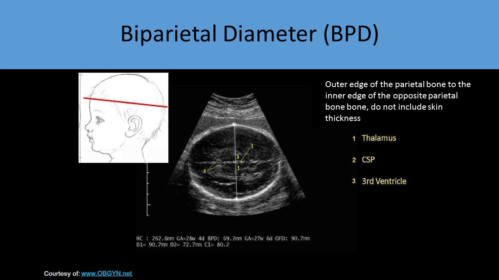 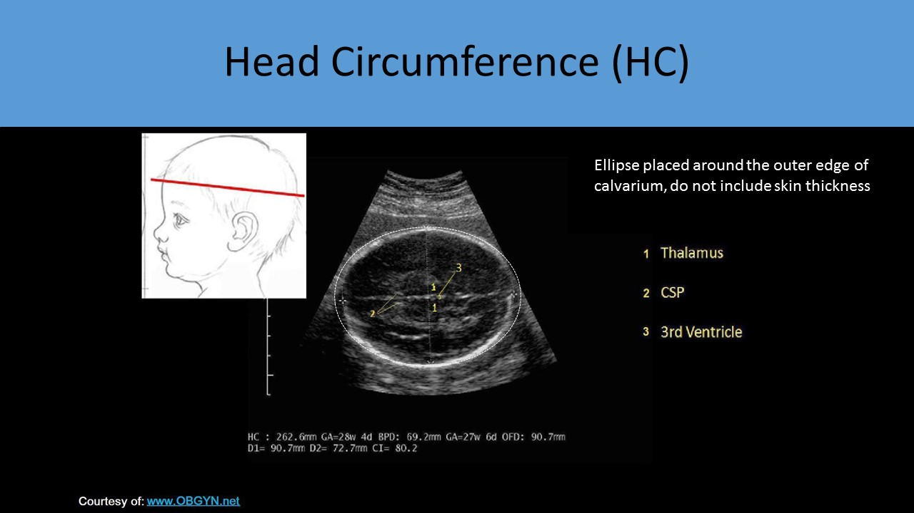 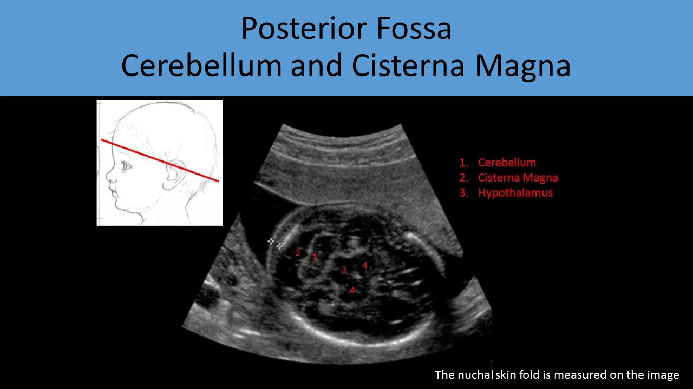
Assessment of the Nuchal Area:
Nuchal Translucency
- Assessed with transabdominal imaging
- Inner to inner dimension
- Measured in the posterior nuchal region in the sagittal plane
- <3mm at 11-14wks
Nuchal Skin Fold
- Increase in the skin thickness of the posterior neck
- Assessed with transabdominal imaging
- Usually measured at the base of the skull in the transverse oblique axial plane demonstrating the CSP, 3rd ventricle, cerebellum, and CM
- Measure the thickness of the skin at the base of the skull from the outer edge of the occipital bone to the outer edge of the skin
- Normal <6mm at 15-21wks
- Always be sure that the fetal chin is in a neutral position and the neck is not hyperextended when performing the measurement
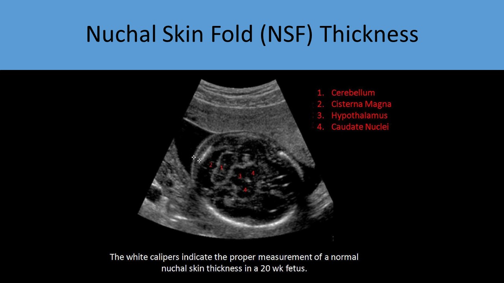 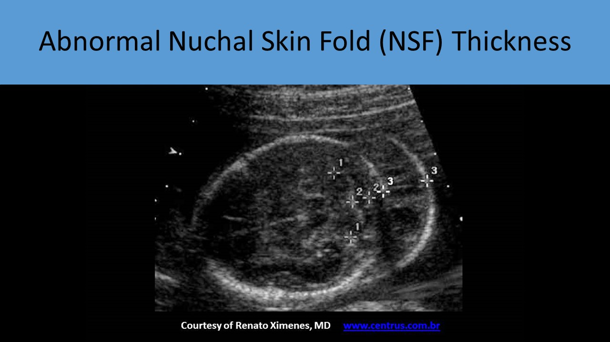
Fetal Abdomen Assessment:
Abdominal Circumference (AC):
- Transverse axial view of the abdomen
- Measured at the level of the portal vein and stomach
- Be sure a single rib is demonstrated on each side of the abdomen to avoid oblique views
- Least accurate biometric measurement due to increased variation in abdomen size between fetuses
- Important to rule out hepatomegaly when intrauterine infection present
- Can be enlarged with cardiomegaly and heart failure
- Important for comparison of size and normal size for fetal age
- The bladder and stomach are usually similar in size
- Should fill and empty every 30 - 45 minutes
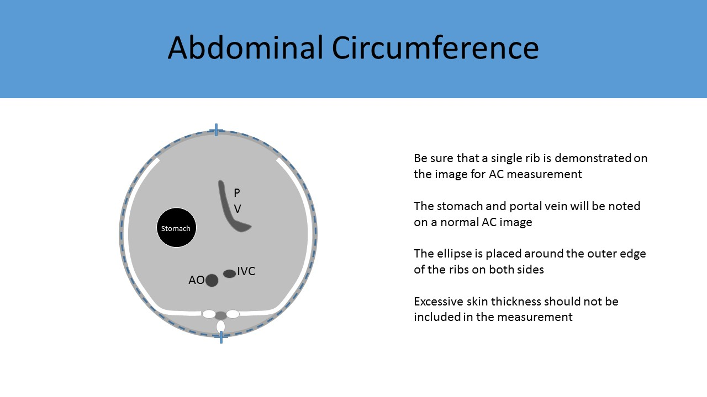 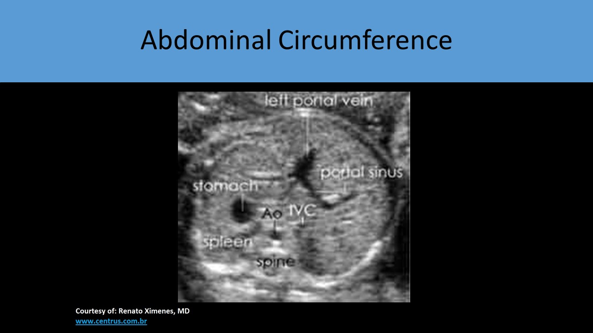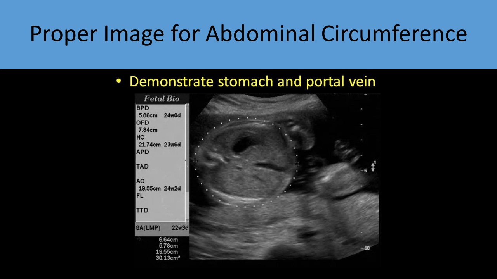 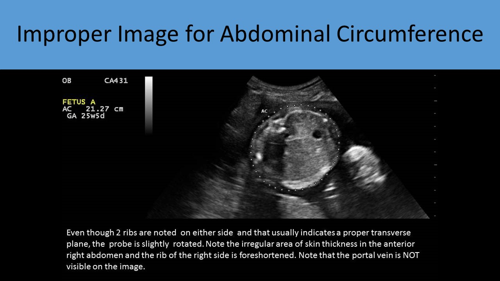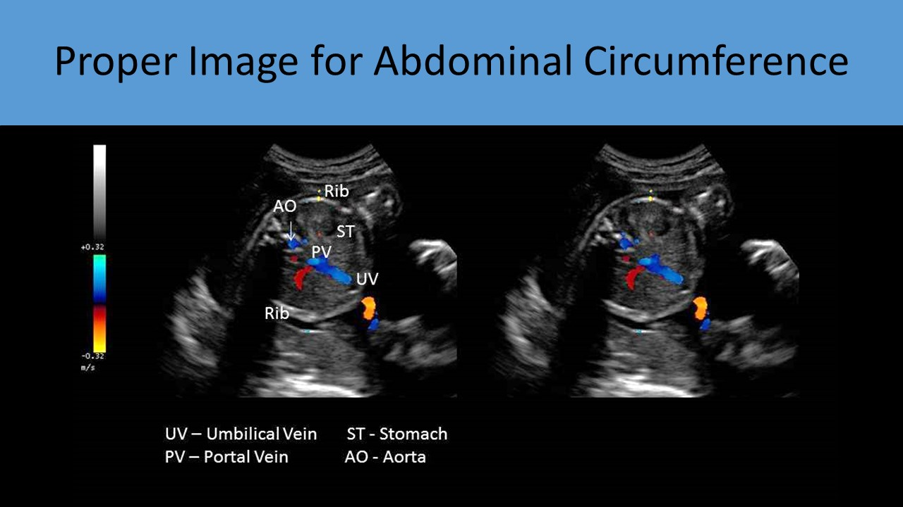 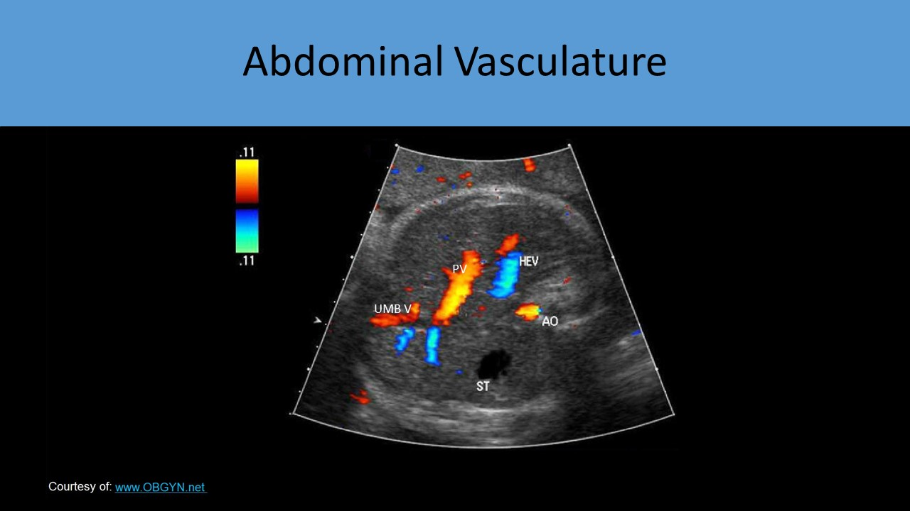
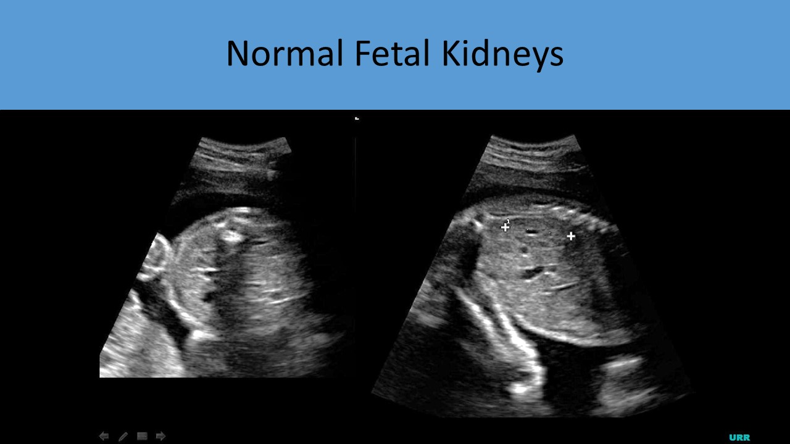 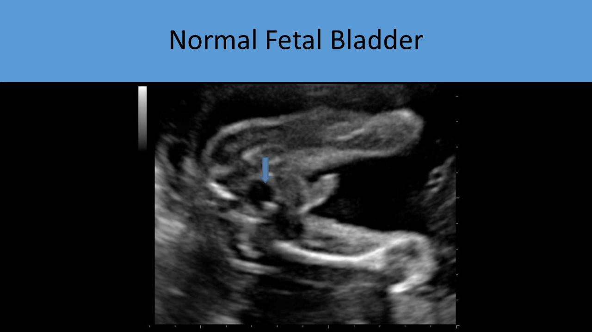
Assessment of the Fetal Extremities:
- Femur Length - measured for all fetal evaluations
- Femur length can be measured as early as 12 weeks
- Proper measurement includes the ossified diaphysis but does not include the epiphyseal cartilage
- Linear transducers provide the most accurate measurement of long bones if fetal presentation allows a good window
- The best long bone measurements are obtained with the US beam perpendicular to the long axis of the bone
- If the femur length does not correlate with the head or abdomen circumference for gestational age, the humerus should be measured
- Humeral Length - level II evaluations
- Radius/Ulna Length - level II evaluations
- Tibia/Fibula Length - level II evaluations
- Foot measurements should be taken from the longest toe to the tip of the heel
- Hands and feet should be evaluated for number of digits and proper structure
- The middle phalanx of the 5th digit is measured when Down Syndrome is suspected
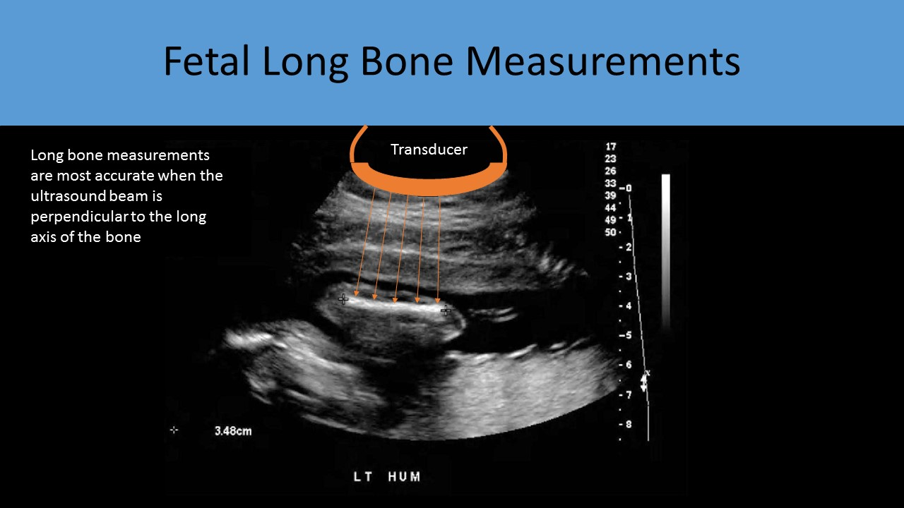 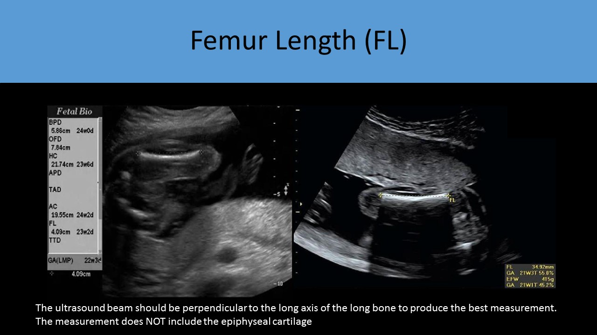
Ratios:
HC/AC Normal range varies slightly with gestational age anywhere from 0.87 to 1.33
BPD/FL Normal range 71 - 87 %
FL/AC Normal range 20 - 24%
CI Normal range 70 - 85%
- The HC is considered more accurate for fetal dating than the standard BPD
- The AC measurement is the most variable fetal measurement